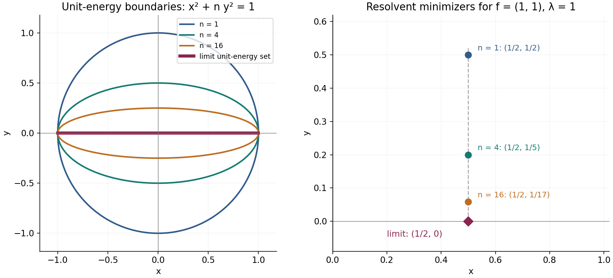

Recovering operators from energy forms
Closed forms, exact domains, and directed limits.
A weight construction often first assigns an energy to vectors. The operator is a later consequence, and its domain must be recovered from that energy. This unit gives the precise analytic machinery: representation of a closed positive form, increasing limits of forms, and convergence of the resulting resolvents and modular powers. The Hilbert space is arbitrary. No separability assumption, countable basis, or faithful-state reduction occurs.
The form-space construction is treated by Barry Simon in A canonical decomposition for quadratic forms with applications to monotone convergence theorems (author copy, 1978). Zoltán Sebestyén and Zsigmond Tarcsay give a complementary treatment in Basic representation theorems of forms (arXiv:2505.09588v1, 2025). Their operator-domain criterion helps distinguish finite energy from an operator value. Here the representation proof proceeds through a bounded energy resolvent and a common form core; the increasing-limit proof works for directed nets, including nondense forms.
Prerequisite contracts and conventions
Inner products are linear in the first variable. A positive operator means a nonnegative operator; injectivity is an additional hypothesis. The zero Hilbert space is allowed.
The earlier written proofs used in this unit are as follows.
- QF-DEP-HILBERT: The bounded prerequisite boundary proves Hilbert completion, orthogonal projection, real-to-complex Riesz representation, bounded sesquilinear representation, rectangular adjoints and the identity \(\overline{\operatorname{ran}T}=(\ker T^*)^\perp\). Its Cauchy-net argument applies without a countable cofinal set. These facts apply to arbitrary Hilbert spaces, including the zero space.
- QF-DEP-SPECTRAL: Bounded Borel functions and the spectral measure–Changes of variable, powers, and actual ranges construct bounded Borel calculus, unbounded spectral integrals, spectral resolution of self-adjoint operators, square roots and inverses. For a real Borel function \(f\), the actual domain of \(f(E)\) is \(\{x:\int |f|^2\,d\langle Ex,x\rangle<\infty\}\). Closedness, adjoints, multiplication, inverse domains and form pairings are proved there. Transport, reduction, and membership in an algebra proves unitary transport with equality of domains. The representation proof below uses these results for a bounded positive contraction; it establishes self-adjointness of \(T^*T\) later, in Problem 1.
- QF-DEP-APPROXIMATION: GP0 proves Bernstein approximation, and Convergence and cutoffs proves its consequence for uniformly bounded strongly convergent nets. Scalar integration, Sections 0–2 proves nonnegative integration, monotone convergence and dominated convergence. These integration theorems concern sequences of functions; the directed form and resolvent limits below are proved by energy estimates. The elementary exponential and logarithm facts needed for imaginary powers are proved in QF-08.
The affiliation application in QF-04 also uses QF-DEP-VN: Finite-vector approximation and the bicommutant proves the bicommutant theorem, Testing commutation on unitaries proves the span by unitaries, and Transport, reduction, and membership in an algebra proves bounded Borel calculus inside a von Neumann algebra. The form representation and convergence theorems need no operator algebra.
For an operator \(T\), \(D(T)\) and \(\operatorname{ran}T\) denote its actual domain and range, without closure. All strong operator limits below mean norm convergence after application to each fixed vector. Strong resolvent convergence of self-adjoint operators means strong convergence of their resolvents at every \(z\in\mathbb C\setminus\mathbb R\).
A form includes its domain
A nonnegative sesquilinear form on \(H\) consists of a linear subspace \(D(q)\subseteq H\) and a sesquilinear map \(q:D(q)\times D(q)\to\mathbb C\), linear in the first variable, with \(q[x]:=q(x,x)\geq0\). The reality of \(q[x+y]\) and \(q[x+iy]\), after expansion, gives \(q(y,x)=\overline{q(x,y)}\). Positivity then gives
\[ |q(x,y)|^2\leq q[x]q[y]. \]Indeed, apply positivity to \(q[x+t y]\); when \(q[y]>0\), minimizing over \(t\in\mathbb C\) proves the inequality, and when \(q[y]=0\), an arbitrarily large scalar with a suitable phase forces the cross term to vanish. The same expansion determines the form from its diagonal by
\[ q(x,y)=\frac14\sum_{k=0}^3 i^k q[x+i^k y]. \]Conversely, the diagonal axioms already contain the whole sesquilinear form. Let \(D\) be a complex vector space and suppose that \(Q:D\to[0,\infty)\) satisfies
\[ Q(\lambda x)=|\lambda|^2Q(x),\qquad Q(x+y)+Q(x-y)=2Q(x)+2Q(y). \tag{QF.1} \]Define first the real polarization
\[ B(x,y)=\frac14\bigl(Q(x+y)-Q(x-y)\bigr). \tag{QF.2} \]This map is symmetric. Two uses of the parallelogram identity give
\[ B(x+z,y)+B(x-z,y)=2B(x,y), \qquad B(2x,y)=2B(x,y). \]Putting \(u=x+z\), \(v=x-z\) in the first identity and using the second shows \(B(u+v,y)=B(u,y)+B(v,y)\). Thus \(B\) is additive in each variable. For rational \(r\), it follows that \(B(rx,y)=rB(x,y)\). Positivity of
\[ Q(x+r y)=Q(x)+2rB(x,y)+r^2Q(y) \]for rational \(r\) yields
\[ |B(x,y)|^2\leq Q(x)Q(y). \tag{QF.3} \]If \(r_n\in\mathbb Q\) tends to a real number \(t\), additivity, (QF.3), and the first identity in (QF.1) give
\[ |B(tx,y)-r_nB(x,y)| =|B((t-r_n)x,y)| \leq |t-r_n|Q(x)^{1/2}Q(y)^{1/2}. \]Hence \(B(tx,y)=tB(x,y)\), so \(B\) is real bilinear. The invariance \(Q(ix)=Q(x)\) implies
\[ B(ix,iy)=B(x,y),\qquad B(ix,y)=-B(x,iy). \]Therefore
\[ s(x,y)=B(x,y)-iB(ix,y) =\frac14\sum_{k=0}^3 i^kQ(x+i^ky) \tag{QF.4} \]is complex linear in its first variable, conjugate linear in its second, and Hermitian. Moreover \(B(ix,x)=0\), so \(s(x,x)=Q(x)\). Thus \(s\) is the unique positive sesquilinear form with diagonal \(Q\). The argument is algebraic: no topology or density assumption on \(D\) is hidden in the polarization step.
The same statement covers an extended-valued diagonal on a larger vector space. If \(Q:V\to[0,\infty]\) satisfies (QF.1), with \(0\cdot\infty=0\), then
\[ D(Q)=\{x\in V:Q(x)<\infty\} \]is a complex subspace. Indeed, homogeneity handles scalar multiples, while the parallelogram identity shows that \(Q(x+y)<\infty\) whenever \(Q(x)\) and \(Q(y)\) are finite. Formula (QF.4) then gives the associated sesquilinear form on this exact finite-value domain.
The form norm and its inner product are
\[ \|x\|_q^2=\|x\|^2+q[x],\qquad \langle x,y\rangle_q=\langle x,y\rangle+q(x,y). \]The form is closed if \(D(q)\) is complete for this norm. It is densely defined if \(\overline{D(q)}=H\). These conditions are independent.
It is useful to extend the diagonal by
\[ \widetilde q[x]= \begin{cases}q[x],&x\in D(q),\\+\infty,&x\notin D(q).\end{cases} \]For two forms, \(q_1\leq q_2\) means \(\widetilde q_1[x]\leq\widetilde q_2[x]\) for every \(x\in H\). Equivalently,
\[ D(q_2)\subseteq D(q_1),\qquad q_1[x]\leq q_2[x]\quad(x\in D(q_2)). \]Thus an increasing family of forms can have decreasing domains. Statements about this order never mean only an inequality on an unspecified common core.
Representation with the exact square-root domain
Theorem. For each densely defined closed nonnegative form \(q\) on \(H\), there is a unique nonnegative self-adjoint operator \(A\) on \(H\) such that
\[ D(q)=D(A^{1/2}),\qquad q(x,y)=\langle A^{1/2}x,A^{1/2}y\rangle. \]Moreover,
\[ \begin{aligned} D(A)=\{x\in D(q):{}&\text{there exists }y\in H\text{ with }\\ &q(x,v)=\langle y,v\rangle\text{ for every }v\in D(q)\}, \end{aligned} \]and the vector \(y\) in this formula equals \(Ax\). Conversely, every nonnegative self-adjoint \(A\) gives a densely defined closed form by these formulas.
Proof. Equip \(V=D(q)\) with the energy inner product
\[ \langle x,v\rangle_V=\langle x,v\rangle_H+q(x,v). \]Closedness makes \(V\) a Hilbert space. The inclusion \(j:V\to H\) is an injective contraction with dense range. Its bounded adjoint exists by BK-01. Set \(B=jj^*\). For \(f\in H\),
\[ 0\leq\langle Bf,f\rangle_H=\|j^*f\|_V^2\leq\|f\|^2. \tag{QF.R1} \]If \(Bf=0\), this identity gives \(j^*f=0\); density of \(jV\) then gives \(f=0\). Thus \(B\) is an injective positive contraction. In particular its spectral projection at zero is zero, even if zero belongs to its spectrum.
For \(u=Bf\), its preimage in \(V\) is \(j^*f\). The adjoint identity gives, for every \(v\in V\),
\[ \langle u,v\rangle_H+q(u,v)=\langle f,v\rangle_H. \tag{QF.R2} \]The spectral calculus of \(B\) defines
\[ A=B^{-1}-I,\qquad a(t)=t^{-1}-1\quad(0<t\leq1). \tag{QF.R3} \]This is a nonnegative self-adjoint operator. Its domain is exactly \(\operatorname{ran}B\): the inverse-domain assertion is proved in SK-07, and the inequalities
\[ (t^{-1}-1)^2\leq t^{-2}\leq 2(t^{-1}-1)^2+2 \]show that the two square-integrability conditions coincide. Equation (QF.R2) already proves \(q(u,v)=\langle Au,v\rangle\) for \(u\in D(A)\), \(v\in V\).
We now recover the entire form domain. Put \(W=D(B^{-1/2})\), with norm \(\|x\|_W=\|B^{-1/2}x\|\). It dominates the Hilbert norm because \(0<B\leq I\). It is complete: if \(x_n\) is Cauchy in this norm, then \(x_n\to x\) in \(H\) and \(B^{-1/2}x_n\to y\) in \(H\); closedness of the spectral operator gives \(x\in W\) and \(B^{-1/2}x=y\).
The common subspace \(D(A)=\operatorname{ran}B\) is dense in each of \(V\) and \(W\), with the same norm on that subspace. Indeed, \(\operatorname{ran}j^*\) is dense in \(V\), since its orthogonal complement is \(\ker j=0\). Its image under \(j\) is \(\operatorname{ran}B\), and for \(x=Bf\),
\[ \|x\|_V^2=\|j^*f\|_V^2 =\langle Bf,f\rangle =\|B^{1/2}f\|^2 =\|B^{-1/2}x\|^2=\|x\|_W^2. \tag{QF.R4} \]For density in \(W\), take \(P_n=E_B([1/n,1])\). If \(x\in W\), then \(x_n=P_nx\in\operatorname{ran}B\), because \(t^{-1}\mathbf1_{[1/n,1]}(t)\) is bounded. Moreover
\[ \|x-x_n\|_W^2 =\int_{(0,1/n)}t^{-1}\,d\langle E_B(t)x,x\rangle\longrightarrow0. \tag{QF.R5} \]This is dominated convergence for the finite integral defining \(W\).
For clarity, density and equal norms here give equality of actual subsets of \(H\). Approximate any \(x\in V\) by a sequence in \(\operatorname{ran}B\) in its \(V\)-norm. The sequence is Cauchy in \(W\), hence has a limit there, and both limits equal \(x\) in \(H\). Thus \(V\subseteq W\). Conversely the spectral approximants in (QF.R5) are Cauchy in \(V\); completeness and their Hilbert-space limit put \(x\in W\) in \(V\). Their limiting norms agree. No countable basis or cofinal subset of a later directed set is involved.
Consequently,
\[ D(q)=D(B^{-1/2}),\qquad \|x\|^2+q[x]=\int_{(0,1]}t^{-1}\,d\langle E_B(t)x,x\rangle. \tag{QF.R6} \]Since the scalar spectral measure is finite, subtracting \(\|x\|^2\) gives
\[ D(q)=D(A^{1/2}),\qquad q[x]=\|A^{1/2}x\|^2. \tag{QF.R7} \]Polarization proves the sesquilinear identity in the theorem.
For the converse graph criterion, suppose \(x\in V\) and \(q(x,v)=\langle y,v\rangle\) for all \(v\in V\). Then
\[ \langle x,v\rangle_V=\langle x+y,jv\rangle_H =\langle j^*(x+y),v\rangle_V. \]Riesz uniqueness in \(V\) gives \(x=j^*(x+y)\) there. Applying \(j\) gives \(x=B(x+y)\), so \(x\in D(A)\) and \(Ax=y\). Density makes \(y\) unique. This proves the exact graph formula in both directions.
If a nonnegative self-adjoint \(C\) represents the same form, the spectral form-pairing identity in SK-07 gives \(q(x,v)=\langle Cx,v\rangle\) for \(x\in D(C)\), \(v\in D(q)\). The graph criterion therefore gives \(C\subseteq A\). Adjoints reverse this inclusion: if \(z\in D(A^*)\), then the identity \(\langle Ax,z\rangle=\langle x,A^*z\rangle\) restricts to \(D(C)\), so \(z\in D(C^*)\) with the same value. Hence \(A=A^*\subseteq C^*=C\), and \(A=C\).
Finally, a nonnegative self-adjoint \(A\) has a closed densely defined square root by SK-05–SK-07. The graph map \(x\mapsto(x,A^{1/2}x)\) identifies the form norm with the norm on its closed graph in \(H\oplus H\), which is complete. This gives the converse form and finishes the proof. \(\square\)
The operator domain requires a Hilbert-space vector representing the form functional; the square-root domain requires only finite energy. Equation (QF.R4) also proves that the operator domain is dense in the form norm.
Nondense forms, lower semicontinuity, and symmetry
Proposition. Let \(q\) be a closed nonnegative form with no density assumption, and put \(K=\overline{D(q)}\). There is a unique nonnegative self-adjoint operator \(A_K\) on the Hilbert space \(K\) representing \(q\). Its extended diagonal is lower semicontinuous for the norm topology and also for the weak topology of \(H\).
Proof. The form norm is unchanged on restricting the ambient space to \(K\), and \(D(q)\) is dense in \(K\). Apply OA-MOD-QF-03 there. For each positive integer \(m\), the bounded positive operator \(C_m=\min(A_K,m)\) has
\[ \widetilde q[x]=\sup_m\langle C_mx,x\rangle\quad(x\in K), \]where the right side is infinite when \(x\notin D(q)\). The functions \(x\mapsto\|C_m^{1/2}x\|^2\) are weakly lower semicontinuous: a bounded linear map preserves weak convergence, and a Hilbert norm is weakly lower semicontinuous since it is the supremum of the absolute values of its scalar inner products with vectors of norm at most one. A supremum of lower semicontinuous functions is lower semicontinuous. Finally, \(K\) is weakly closed because
\[ K=\bigcap_{y\in K^\perp}\{x:\langle x,y\rangle=0\}. \]Extending by infinity off \(K\) therefore preserves lower semicontinuity on \(H\). The weak assertion implies the norm assertion. \(\square\)
This is representation on \(K\), not a densely defined self-adjoint operator on all of \(H\) with domain in a proper closed subspace.
Symmetry corollary. Suppose \(q\) is densely defined and closed, and \(W\) is a unitary on \(H\) satisfying
\[ WD(q)=D(q),\qquad q[Wx]=q[x]\quad(x\in D(q)). \]Its representing operator satisfies \(WA W^*=A\), including equality of domains, and \(W\) commutes with all spectral projections of \(A\).
Proof. The operator \(WA W^*\) has square-root domain \(WD(q)\), and its form at \(x\) is \(q[W^*x]\). The hypotheses and uniqueness in OA-MOD-QF-03 identify it with \(A\). Equivalently, \(W\) commutes with \((I+A)^{-1}\). The spectral calculus of this bounded operator then shows commutation with the spectral projections of \(A\). \(\square\)
If these hypotheses hold for every unitary of the commutant \(M'\) of a von Neumann algebra \(M\subseteq B(H)\), then \(A\) is affiliated with \(M\): its spectral projections belong to \(M\). Indeed \((I+A)^{-1}\) commutes with every such unitary, hence with \(M'\), and lies in \(M''=M\). Every element of a unital C*-algebra is a linear combination of unitaries; for a self-adjoint contraction \(b\), use the unitary \(b+i(1-b^2)^{1/2}\). Bounded Borel calculus in \(M\) completes the claim. This is a conditional symmetry test, not a claim that every form constructed from weights is invariant under a specified commutant.
Resolvents as energy minimizers
Proposition. Let \(q\) be densely defined and closed, with representing operator \(A\). For \(\lambda>0\) and \(f\in H\), put
\[ F_{q,\lambda,f}(v)=q[v]+\lambda\|v\|^2-2\operatorname{Re}\langle f,v\rangle \quad(v\in D(q)). \]This functional has the unique minimizer \(u=(A+\lambda I)^{-1}f\). More precisely,
\[ \begin{gathered} q(u,v)+\lambda\langle u,v\rangle=\langle f,v\rangle\quad(v\in D(q)),\\ F_{q,\lambda,f}(v)=q[v-u]+\lambda\|v-u\|^2-\langle f,u\rangle,\\ \langle f,u\rangle=q[u]+\lambda\|u\|^2\in[0,\infty). \end{gathered} \]Consequently,
\[ \langle (A+\lambda I)^{-1}f,f\rangle =\sup_{v\in D(q)}\bigl(2\operatorname{Re}\langle f,v\rangle-q[v]-\lambda\|v\|^2\bigr). \]Proof. The inner product \(q(x,y)+\lambda\langle x,y\rangle\) makes \(D(q)\) complete because its norm is equivalent to \(\|\cdot\|_q\). The functional \(v\mapsto\langle f,v\rangle\) is continuous for it, with bound \(\lambda^{-1/2}\|f\|\). Riesz representation gives a unique \(u\in D(q)\) satisfying the first equation. OA-MOD-QF-03 identifies \(u\in D(A)\) and \(Au=f-\lambda u\). Substitution of \(v=u\) proves the real energy identity. Expanding the square in the displayed expression for \(F\) proves that identity and uniqueness of the minimizer; it also proves the supremum formula. \(\square\)
The same proof for a form with \(K=\overline{D(q)}\) gives the unique minimizer
\[ u=(A_K+\lambda I_K)^{-1}P_Kf. \]Order consequence. If \(q_1\leq q_2\) are densely defined closed forms with operators \(A_1,A_2\), then
\[ 0\leq(A_2+\lambda I)^{-1}\leq(A_1+\lambda I)^{-1}\leq\lambda^{-1}I. \]The supremum for \(q_2\) is taken over a smaller domain with a no-smaller energy penalty. The scalar inequality for every \(f\) is exactly the asserted bounded-operator order. The same conclusion holds without density: define \(K_j=\overline{D(q_j)}\) and \(R_j(\lambda)=(A_{K_j}+\lambda I_{K_j})^{-1}P_{K_j}\). The nondense minimizer has the identical supremum formula, so \(0\leq R_2(\lambda)\leq R_1(\lambda)\leq\lambda^{-1}I\). No commutation of \(A_1\) and \(A_2\) is assumed.
The domain of an increasing limit
Theorem. Let \(I\) be a nonempty directed set, and let \((q_i)_{i\in I}\) be closed nonnegative forms on \(H\) such that \(q_i\leq q_j\) whenever \(i\leq j\). Define
\[ \begin{aligned} D_\infty &=\{x\in H:\sup_{i\in I}\widetilde q_i[x]<\infty\}\\ &=\left\{x\in\bigcap_{i\in I}D(q_i):\sup_{i\in I}q_i[x]<\infty\right\},\\ q_\infty[x]&=\sup_{i\in I}q_i[x]\qquad(x\in D_\infty). \end{aligned} \]Then \(D_\infty\) is a linear subspace, \(q_\infty\) is the diagonal of a closed nonnegative sesquilinear form on it, and
\[ q_\infty(x,y)=\lim_{i\in I}q_i(x,y)\quad(x,y\in D_\infty). \]No density assertion is automatic. If \(D_\infty\) is dense, its representing nonnegative self-adjoint operator \(A\) satisfies
\[ D(A^{1/2})=D_\infty,\qquad \|A^{1/2}x\|^2=\sup_i q_i[x]\quad(x\in D_\infty). \]Without density, these conclusions hold for a self-adjoint operator \(A_K\) on \(K=\overline{D_\infty}\).
Proof. The inequalities
\[ q_i[x+y]\leq2q_i[x]+2q_i[y],\qquad q_i[tx]=|t|^2q_i[x] \]show that \(D_\infty\) is linear. For \(x,y\in D_\infty\), each of the four diagonals in the polarization formula has a finite increasing limit. Thus \(q_i(x,y)\) converges. Passing to the limit in sesquilinearity, Hermitian symmetry, and positivity proves that these limits form a nonnegative sesquilinear form with diagonal \(q_\infty\).
To prove completeness, let \((x_m)_{m\geq1}\) be Cauchy for \(\|\cdot\|_{q_\infty}\). It converges in \(H\) to some \(x\). For each fixed \(i\), it is Cauchy in \(\|\cdot\|_{q_i}\), so closedness gives \(x\in D(q_i)\) and convergence to \(x\) in that norm. Fix \(\varepsilon>0\), and choose \(m_0\) so that
\[ q_\infty[x_m-x_l]\leq\varepsilon^2\quad(m,l\geq m_0). \]For fixed \(i\) and \(m\geq m_0\), take \(l\to\infty\) in the \(q_i\)-norm to obtain
\[ q_i[x_m-x]\leq\varepsilon^2. \]The estimate holds for every \(i\), so the difference \(x_m-x\) has finite supremum energy. Since \(x_m\in D_\infty\), linearity now gives \(x\in D_\infty\), and taking the supremum gives \(q_\infty[x_m-x]\leq\varepsilon^2\). Together with Hilbert-norm convergence, this proves completeness. A sequence suffices here because a form norm defines a metric, regardless of the directed indexing set or the Hilbert space's density character. Representation follows from OA-MOD-QF-03 and OA-MOD-QF-04. \(\square\)
Essential counterexample. On any nonzero \(H\), take \(A_n=nI\) and \(q_n[x]=n\|x\|^2\). Every square-root domain is \(H\), so their intersection is dense and equals \(H\). Nevertheless,
\[ D_\infty=\{0\},\qquad\sup_n q_n[x]=+\infty\quad(x\ne0). \]Thus even bounded, everywhere-defined operators can have an increasing limit with no nonzero finite-energy vector. The assertion with only a dense intersection of domains is false.
Strong convergence of resolvents, including nets
Theorem. In OA-MOD-QF-06, put \(K_i=\overline{D(q_i)}\), let \(A_i\) represent \(q_i\) on \(K_i\), and write \(P_i=P_{K_i}\). No density assumption on the individual forms is needed. Set \(K=\overline{D_\infty}\) and let \(A_K\) represent \(q_\infty\) on \(K\). For every \(\lambda>0\),
\[ (A_i+\lambda I_{K_i})^{-1}P_i\ \longrightarrow\ (A_K+\lambda I_K)^{-1}P_K \]strongly on \(H\). More generally, for every \(z\in\mathbb C\setminus[0,\infty)\),
\[ (A_i-zI_{K_i})^{-1}P_i\ \longrightarrow\ (A_K-zI_K)^{-1}P_K \]strongly. If \(K=H\), all \(K_i=H\), because \(D_\infty\subseteq D(q_i)\); this is strong resolvent convergence to \(A=A_H\). If \(K\ne H\), the displayed operators are generalized resolvents on \(H\); they are not the resolvents of a densely defined self-adjoint operator on \(H\).
Proof of existence of the strong limit. Fix \(\lambda>0\) and write \(R_i=(A_i+\lambda I_{K_i})^{-1}P_i\). By OA-MOD-QF-05 these are a decreasing net of positive operators bounded above by \(\lambda^{-1}I\). For fixed \(f\in H\), the real net \(s_i=\langle R_i f,f\rangle\) decreases to its infimum. If \(j\geq i\), then \(C=R_i-R_j\) satisfies \(0\leq C\leq\lambda^{-1}I\), so the bounded spectral calculus gives \(C^2\leq\lambda^{-1}C\) and
\[ \|(R_i-R_j)f\|^2\leq\lambda^{-1}(s_i-s_j). \]Given a tail on which the scalar differences are small, any two indices in that tail have a common upper index. Applying the inequality twice and the triangle inequality proves that \((R_i f)\) is a norm-Cauchy net. Its limit defines a bounded positive operator \(R\), with \(0\leq R\leq\lambda^{-1}I\). This proves strong convergence without selecting a countable cofinal set.
Identification of the limit. Fix \(f\) and put \(u_i=R_if\), \(u=Rf\). From the variational identities,
\[ e_i:=q_i[u_i]+\lambda\|u_i\|^2=\langle f,u_i\rangle \leq\lambda^{-1}\|f\|^2. \]The numbers \(e_i\) are real, and strong convergence gives \(e_i\to e:=\langle f,u\rangle\). For a fixed \(j\), all sufficiently late indices satisfy \(i\geq j\), hence \(u_i\in D(q_j)\) and \(q_j[u_i]\leq q_i[u_i]\). Lower semicontinuity from OA-MOD-QF-04 gives
\[ \widetilde q_j[u]+\lambda\|u\|^2 \leq\liminf_i\bigl(q_j[u_i]+\lambda\|u_i\|^2\bigr) \leq e. \]Taking the supremum over \(j\) proves \(u\in D_\infty\) and \(q_\infty[u]+\lambda\|u\|^2\leq e\).
For any \(v\in D_\infty\), minimality of \(u_i\) gives
\[ -e_i=F_{q_i,\lambda,f}(u_i)\leq F_{q_i,\lambda,f}(v). \]The right side tends to \(F_{q_\infty,\lambda,f}(v)\), so \(-e\leq F_{q_\infty,\lambda,f}(v)\). The preceding energy bound also gives \(F_{q_\infty,\lambda,f}(u)\leq-e\). Thus \(u\) minimizes the limiting functional, and taking \(v=u\) proves equality. The nondense version of OA-MOD-QF-05 identifies
\[ u=(A_K+\lambda I_K)^{-1}P_K f. \]Other resolvent parameters. Take \(\lambda=1\) and write \(B_i=(I_{K_i}+A_i)^{-1}P_i\), \(B=(I_K+A_K)^{-1}P_K\). These are self-adjoint contractions and \(B_i\to B\) strongly. Their powers, hence their polynomials, converge strongly by boundedness and induction. Uniform polynomial approximation shows that \(h(B_i)\to h(B)\) strongly for every \(h\in C([0,1])\).
For \(z\in\mathbb C\setminus[0,\infty)\), the function
\[ g_z(s)=\frac{s}{1-(1+z)s}\quad(0\leq s\leq1) \]is continuous and satisfies \(g_z(0)=0\). On \(K_i\) it transforms the ordinary resolvent; on \(K_i^\perp\), both sides below are zero. The spectral calculus therefore gives
\[ g_z(B_i)=(A_i-zI_{K_i})^{-1}P_i,\qquad g_z(B)=(A_K-zI_K)^{-1}P_K. \]This proves the second limit and the strong resolvent statement when \(K=H\). If \(K\ne H\), the limit annihilates \(K^\perp\), whereas a resolvent of a densely defined self-adjoint operator is injective. This proves the final distinction. \(\square\)
The proof also gives convergence of the minimizing energies:
\[ q_i[(A_i+\lambda I_{K_i})^{-1}P_if] \longrightarrow q_\infty[(A_K+\lambda I_K)^{-1}P_Kf]. \]Indeed the energy identities converge and the Hilbert norms converge. It does not assert that \(A_i^{1/2}x\) converges as a vector for every \(x\in D_\infty\); the theorem first controls the scalar energies and the resolvents.
Logarithms and imaginary powers
Scalar facts used below. Define \(\exp z=\sum_{n\geq0}z^n/n!\). On \(|z|\leq M\), once \(n+1\geq2M\), successive absolute terms decrease by a factor at most \(1/2\); this proves absolute and uniform convergence on every bounded disk. Finite polynomial sums are continuous, and a uniform limit is continuous by the triangle inequality. Expanding the product of two absolutely convergent series and collecting terms of total degree gives
\[ \exp(z+w)=\exp z\exp w,\quad \overline{\exp z}=\exp\overline z,\quad \exp z\exp(-z)=1. \tag{QF.E1} \]Here regrouping is justified directly: the sum of absolute values is at most \(\exp|z|\exp|w|\), and the discarded tails tend to zero. For each degree the binomial identity gives the coefficient \((z+w)^n/n!\). That identity follows by multiplying finite polynomials, or by induction using Pascal's recurrence.
For real \(t\), the series is real and \(\exp t=(\exp(t/2))^2>0\), where nonvanishing follows from (QF.E1). For \(t>0\), the positive-term series gives \(\exp t\geq1+t>1\). Thus real \(\exp\) is strictly increasing, tends to infinity at \(+\infty\), and tends to zero at \(-\infty\) by its reciprocal identity. Its range is all of \((0,\infty)\): for \(a>0\), choose \(r<s\) with \(\exp r<a<\exp s\), take the supremum of \(\{t\in[r,s]:\exp t\leq a\}\), and use continuity from either side to obtain a point with value \(a\). Its inverse \(\log\) is continuous. Indeed, for \(a=\exp t\), the interval \((\exp(t-\varepsilon),\exp(t+\varepsilon))\) is carried into \((t-\varepsilon,t+\varepsilon)\). This also gives \(\log a\to-\infty\) as \(a\downarrow0\) and \(\log a\to+\infty\) as \(a\to\infty\).
For real \(u\), (QF.E1) gives \(|\exp(iu)|=1\). The series gives \(|\exp(ih)-1|\leq |h|\exp|h|\). Subdivide an increment \(u-v\) into \(n\) equal parts, telescope using (QF.E1), and use the modulus-one identity to obtain
\[ |\exp(iu)-\exp(iv)| \leq |u-v|\exp(|u-v|/n). \]Letting \(n\to\infty\) proves the exact bound \(|\exp(iu)-\exp(iv)|\leq |u-v|\). These elementary arguments supply continuity, endpoint behaviour and the uniform estimate used below.
Corollary. Under OA-MOD-QF-07, assume \(D_\infty\) is dense in \(H\), and assume that \(A_{i_0}\) is injective for one index \(i_0\). The limit \(A\) and every \(A_i\) with \(i\geq i_0\) are injective. On that tail,
\[ \log A_i\longrightarrow\log A \]in the strong resolvent sense. For every \(x\in H\) and \(0\leq T<\infty\),
\[ \sup_{|t|\leq T}\|A_i^{it}x-A^{it}x\|\longrightarrow0. \]The powers are defined by \(A^{it}=e^{it\log A}\); they are unitaries. Injectivity means zero spectral projection at zero, not a positive lower bound. The operators may be unbounded above and have spectrum accumulating at zero.
Proof of injectivity and logarithm convergence. If \(Ax=0\), then \(x\in D(A^{1/2})=D_\infty\), and \(0\leq q_{i_0}[x]\leq q_\infty[x]=0\). Hence \(A_{i_0}^{1/2}x=0\), so \(x=0\). The same argument using \(q_{i_0}\leq q_i\) proves injectivity for \(i\geq i_0\). The logarithms are therefore densely defined self-adjoint operators, with
\[ D(\log A)=\left\{x:\int_{(0,\infty)}|\log a|^2\,d\langle E_A(a)x,x\rangle<\infty\right\}, \]and the analogous domains for \(A_i\).
Put \(B_i=(I+A_i)^{-1}\), \(B=(I+A)^{-1}\). For nonreal \(z\), set
\[ h_z(s)=\left(\log\frac{1-s}{s}-z\right)^{-1}\quad(0<s<1), \qquad h_z(0)=h_z(1)=0. \]This is continuous on \([0,1]\), since the real logarithm tends to opposite infinities at the two endpoints. The strong continuous-calculus convergence proved in OA-MOD-QF-07 gives \(h_z(B_i)\to h_z(B)\). There are no endpoint spectral atoms: \(B_i,B\) are injective, and their spectral projections at one are the kernel projections of \(A_i,A\). Thus these operators are exactly \((\log A_i-z)^{-1}\) and \((\log A-z)^{-1}\).
Proof of locally uniform power convergence. For \(0<s<1\), write
\[ \ell(s)=\log\frac{1-s}{s},\qquad F_t(s)=e^{it\ell(s)}. \]Fix \(x\in H\) and \(\varepsilon>0\). Because the spectral measure of \(B\) at \(x\) has no mass at zero or one, choose a continuous \(\chi:[0,1]\to[0,1]\) supported in a compact subinterval of \((0,1)\) such that
\[ \|(I-\chi(B))x\|<\varepsilon. \]For example, take cutoff functions equal to one on successively larger compact subintervals; dominated convergence makes this norm tend to zero. Continuous-calculus convergence also gives \(\|(I-\chi(B_i))x\|<2\varepsilon\) for all sufficiently late \(i\).
The functions \(\chi F_t\), extended by zero at the endpoints, are continuous on \([0,1]\). On the support of \(\chi\), \(|\ell|\) is bounded by a finite constant \(L\), so
\[ \|\chi F_t-\chi F_s\|_\infty\leq L|t-s|. \]A finite mesh in \([-T,T]\), strong continuous-calculus convergence at its finitely many mesh points, and this estimate imply
\[ \sup_{|t|\leq T}\|(\chi F_t)(B_i)x-(\chi F_t)(B)x\|\longrightarrow0. \]Finally split each power into its cutoff part and its remainder. Unitarity bounds the remainder by \(\|(I-\chi(B_i))x\|\) or \(\|(I-\chi(B))x\|\), respectively. The total error has eventual limsup at most \(3\varepsilon\), uniformly in \(|t|\leq T\). Let \(\varepsilon\downarrow0\). \(\square\)
The density assumption cannot be dropped from the conclusion of unitary convergence on all of \(H\). For \(A_n=nI\), every \(A_n\) is injective, but \(D_\infty=\{0\}\), and \(n^{it}I\) has no such locally uniform strong limit. Indeed, for \(n>1\), the times \(t_n=1/\log n\) tend to zero while \(n^{it_n}=\exp(i)\ne1\). To see the inequality from the series alone, group the terms of its imaginary part as \(1-1/3!+(1/5!-1/7!)+(1/9!-1/11!)+\cdots\), which is at least \(5/6>0\). Uniform convergence near zero to a continuous vector-valued limit would contradict \(n^{i0}=1\).
Worked models
A form domain larger than the operator domain. On \(\ell^2(\mathbb N)\), let
\[ (Ax)_k=k^2x_k,\quad D(A)=\left\{x:\sum_{k\geq1}k^4|x_k|^2<\infty\right\}. \]The spectral theorem here is coordinatewise, and its form has
\[ D(q)=\left\{x:\sum_{k\geq1}k^2|x_k|^2<\infty\right\},\qquad q[x]=\sum_{k\geq1}k^2|x_k|^2. \]The vector \(x_k=k^{-2}\) lies in \(D(q)\), since its energy is \(\sum k^{-2}<\infty\): for \(k\geq2\), use \(k^{-2}\leq(k-1)^{-1}-k^{-1}\) and telescope. It does not lie in \(D(A)\), since \(Ax\) would be the constant sequence one. Its finite energy therefore does not justify applying \(A\) to it as a Hilbert-space vector.
An arbitrary index set. Let \(J\) be any set, and choose finite real numbers \(w_j\geq0\) for \(j\in J\). On \(H=\ell^2(J)\), define bounded operators
\[ (A_nx)_j=\min(w_j,n)x_j. \]For nonnegative families, sums over \(J\) mean suprema of finite subsums. Their increasing form limit is
\[ D_\infty=\left\{x:\sum_{j\in J}w_j|x_j|^2<\infty\right\},\qquad q_\infty[x]=\sum_{j\in J}w_j|x_j|^2. \]To check the equality of the supremum and the sum, the left side is at most the right side termwise; on each finite subset the truncated terms converge to the original terms, giving the reverse inequality after taking the supremum over finite subsets. Finite-support vectors belong to \(D_\infty\), so it is dense even when \(J\) is uncountable. The representing operator is coordinate multiplication by \(w_j\), with domain \(\{x:\sum_j w_j^2|x_j|^2<\infty\}\), and
\[ ((A_n+\lambda I)^{-1}x)_j=\frac{x_j}{\min(w_j,n)+\lambda} \longrightarrow\frac{x_j}{w_j+\lambda}. \]This is a direct nonseparable model of the theorem. No countability of the index set is inferred from the sequence of truncations.
A proper finite-energy subspace. Let \(H=H_0\oplus H_1\) with \(H_1\ne0\), and let \(C\geq0\) be any densely defined self-adjoint operator on \(H_0\). Put \(A_n=C\oplus nI_{H_1}\). Then
\[ q_n[(x,y)]=\|C^{1/2}x\|^2+n\|y\|^2, \qquad D(q_n)=D(C^{1/2})\oplus H_1. \]All these domains are equal and dense, yet
\[ D_\infty=D(C^{1/2})\oplus\{0\},\quad K=H_0\oplus\{0\},\quad (A_n+\lambda I)^{-1}\longrightarrow(C+\lambda I)^{-1}\oplus0. \]The limiting form represents \(C\) on \(K\). This explains exactly what is lost when an entire orthogonal subspace acquires infinite energy.

Figure. On the real coordinate slice of \(H=\mathbb C^2\), take \(q_n[(x,y)]=|x|^2+n|y|^2\). The left panel shows the exact unit-energy boundaries for \(n=1,4,16\). As \(n\to\infty\), the closed unit-energy sets decrease to the segment \(\{(x,0):|x|\leq1\}\); the entire finite-energy domain is the complex line \(K=\mathbb C\oplus0\). The right panel shows the minimizers for \(\lambda=1\), \(f=(1,1)\): \(u_n=(1/2,1/(n+1))\to(1/2,0)\). Thus an ordinary resolvent can converge strongly to a map that vanishes on \(K^\perp\), as proved in QF-07. Simon's author copy treats this nondense interpretation; the displayed coordinate example follows directly by substitution.
Problems with solutions
Problem 1: a closed operator supplies a closed form. Let \(T:D(T)\subseteq H\to L\) be a densely defined closed linear operator between arbitrary Hilbert spaces. Prove that \(q_T(x,y)=\langle Tx,Ty\rangle\) on \(D(T)\) is a densely defined closed nonnegative form. Determine the domain criterion for its representing operator without assuming that \(T\) is bounded.
Solution. The form norm is the graph norm of \(T\), so completeness is precisely closedness of its graph. By OA-MOD-QF-03 its representing operator has domain consisting of \(x\in D(T)\) for which some \(y\in H\) satisfies \(\langle Tx,Tv\rangle=\langle y,v\rangle\) for all \(v\in D(T)\). Taking conjugates gives \(\langle Tv,Tx\rangle=\langle v,y\rangle\), exactly the definition of \(Tx\in D(T^*)\) with \(T^*Tx=y\). Thus the representing operator is \(T^*T\) on \(\{x\in D(T):Tx\in D(T^*)\}\). This argument also proves that \(T^*T\) is nonnegative self-adjoint through the form theorem; no independent theorem about self-adjointness of \(T^*T\) has been assumed. The adjoint of a densely defined operator is understood through this displayed defining identity.
Problem 2: strong is not norm resolvent convergence. On \(\ell^2(\mathbb N)\), let \(P_n\) project onto the first \(n\) coordinates. Apply the increasing-form theorem to \(A_n=P_n\). Compute the norm difference of the resolvents at \(-1\).
Solution. The forms are \(q_n[x]=\sum_{k\leq n}|x_k|^2\), with common domain \(H\). Their limit is \(q[x]=\|x\|^2\), represented by \(A=I\). Since \((I+P_n)^{-1}=I-\tfrac12P_n\),
\[ (I+P_n)^{-1}-\tfrac12I=\tfrac12(I-P_n). \]This tends strongly to zero because tails of an \(\ell^2\) vector have norm tending to zero, but its operator norm is \(1/2\) for every \(n\). The theorem therefore cannot promise norm resolvent convergence, even for uniformly bounded operators on a common domain.
Problem 3: recover the extended energy from resolvents. Let \(q\) be a closed nonnegative form, \(K=\overline{D(q)}\), and \(A_K\) its operator. Define \(R_r=(A_K+rI_K)^{-1}P_K\) for \(r>0\). Prove the formula, including its infinite values,
\[ \widetilde q[x]=\sup_{r>0}\left(r\|x\|^2-r^2\langle R_rx,x\rangle\right). \]Solution. Write \(x=x_K+x_\perp\). The expression equals
\[ r\|x_\perp\|^2+ \int_{[0,\infty)}\frac{ra}{a+r}\,d\langle E_{A_K}(a)x_K,x_K\rangle. \]Both terms increase with \(r\). If \(x_\perp\ne0\), their supremum is infinity. If \(x_\perp=0\), monotone convergence gives the integral of \(a\), which is \(q[x]\) for \(x\in D(q)=D(A_K^{1/2})\) and infinity otherwise. This proves the formula and shows that the generalized resolvents retain both the finite energies and the exact domain.
Problem 4: a sufficient density test. In OA-MOD-QF-06, suppose there is a dense linear subspace \(D_0\subseteq\bigcap_iD(q_i)\) such that \(\sup_iq_i[x]<\infty\) for each \(x\in D_0\). Prove that \(D_\infty\) is dense. Explain why no uniform constant in \(x\) is required, and compare this with the family \(nI\).
Solution. The pointwise energy hypothesis gives \(D_0\subseteq D_\infty\), and taking Hilbert-space closures proves density. No bound of the form \(q_i[x]\leq C\|x\|^2\) has been used; the eventual operator can be unbounded. For \(nI\), every nonzero vector has infinite supremum energy, so no dense \(D_0\) can satisfy the hypothesis on a nonzero Hilbert space. Merely choosing a common algebraic domain does not repair the missing bound.
Problem 5: finite sums need a domain check. Let \(q_1,\ldots,q_m\) be closed nonnegative forms. Prove that their sum is closed on \(\bigcap_{k=1}^mD(q_k)\). State the extra condition needed to represent it by a self-adjoint operator on the whole ambient space.
Solution. A sequence Cauchy for \(\|x\|^2+\sum_kq_k[x]\) is Cauchy in every individual form norm and converges in \(H\) to one vector \(x\). Closedness of each form puts \(x\) in every domain and gives convergence in each form norm. There are finitely many terms, so their sum tends to zero as well. Thus the sum is closed. Representation on all of \(H\) additionally requires the intersection to be dense. Without it, OA-MOD-QF-04 gives the operator on the closure of the intersection. Density of each individual domain alone is not a premise that permits one to omit this check.
What this unit exports
The core exports are the exact domain and graph formulas in OA-MOD-QF-03; the finite-energy limit in OA-MOD-QF-06; the directed strong-resolvent theorem in OA-MOD-QF-07; and the injective logarithm and locally uniform imaginary-power convergence in OA-MOD-QF-08. They may be used on GNS Hilbert spaces without any separability or sigma-finiteness assumption, once the proposed forms have actually been proved closed or expressed as increasing limits of closed forms.
Representation applies once a proposed form is proved closed. The convergence theorem uses its exact finite-energy domain; a common algebraic domain alone is insufficient. Closability for a general form, spatial derivatives and modular identities require their own arguments. For the further closed-form tests, see Closability and lower semicontinuity on the given domain and One resolvent inequality recovers the whole form order.